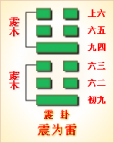
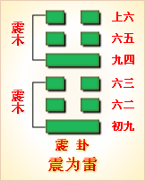

<!DOCTYPE html PUBLIC "-//W3C//DTD XHTML 1.0 Transitional//EN" "http://www.w3.org/TR/xhtml1/DTD/xhtml1-transitional.dtd">

<html xmlns="http://www.w3.org/1999/xhtml">
<head>
<meta content="text/html; charset=utf-8" http-equiv="Content-Type"/>
<title>周易第五十一卦：震卦 震为�?震上震下原文解释翻译-周易-国学�?/title>
<meta content="周易,震卦,震为�?震上震下" name="keywords"/>
<meta content="周易,震卦,震为�?震上震下，周易第五十一卦：震卦 震为�?震上震下解释翻译�?（震为雷）震上震�?《震》：亨。震来虩虩，笑言哑哑，震惊百里，不丧匕鬯�?初九，震来虩虩，后笑言哑哑，吉�?六二，震来厉，亿丧贝，跻于九陵，勿逐，七日得�?六三，震苏苏" name="description"/>
<link href="css.css" media="screen" rel="stylesheet" type="text/css"/>
</head>
<body>
<div class="gxlayout">
</div>
<div class="gxlayout">
<div class="ihead">
<div class="title"><a>周易</a></div>
<ul class="more fl">
<li>当前位置:<a>国学梦首�?/a> &gt; <a>国学经典</a> &gt; <a>经部</a> &gt; <a>四书五经</a> &gt; <a>周易</a> &gt;  周易第五十一卦：震卦 震为�?震上震下原文解释翻译</li>
</ul>
</div>
<div class="gxbl fl">
<div class="latitle">

<h1>周易第五十一卦：震卦 震为�?震上震下</h1>
<div class="lainfo"><span>作者：佚名</span> <span>全集�?a>周易</a></span> <span>来源：网�?/span> <span>[<a rel="nofollow" target="_blank">挑错/完善</a>]</span></div>
</div>
<div class="lacontent">
<div class="clearfix"></div>
<!--<!-- allowfullscreen="" frameborder="0" height="36" src="http://www.ximalaya.com/swf/sound/yellow.swf?id=1382842&amp;auto=true" width="260"></iframe>-->
<p style="text-align:center"></p>
<p style="text-align:center"><a>周易第五十一卦详�?/a></p>
<p style="text-align:center"><a>第五十一卦初九爻详解</a>　<a>第五十一卦六二爻详解</a>　<a>第五十一卦六三爻详解</a></p>
<p style="text-align:center"><a>第五十一卦九四爻详解</a>　<a>第五十一卦六五爻详解</a>　<a>第五十一卦上六爻详解</a></p>
<p><strong><a target="_blank">周易</a>第五十一�?�?震为�?震上震下</strong></p>
<p>震：亨。震来虩虩，笑言哑哑。震惊百里，不丧匕鬯�?/p>
<p>彖曰：震，亨。震来虩虩，恐致福也。笑言哑哑，后有则也。震惊百里，惊远而惧迩也。出可以守宗庙社稷，以为祭主也�?/p>
<p>象曰：洊雷，�?君子以恐惧修身�?/p>
<p>初九：震来虩虩，后笑言哑哑，吉。象曰： 震来虩虩，恐致福也。笑言哑哑，后有则也�?/p>
<p>六二：震来厉，亿丧贝，跻于九陵，勿逐，七日得。象曰：震来厉，乘刚也�?/p>
<p>六三：震苏苏，震行无眚。象曰：震苏苏，位不当也�?/p>
<p>九四：震遂泥。象曰：震遂泥，未光也�?/p>
<p>六五：震往来厉，亿无丧，有事。象曰：震往来厉，危行也。其事在中，大无丧也�?/p>
<p>上六：震索索，视矍矍，征凶。震不于其躬，于其邻，无咎。婚媾有言。象曰：震索索，未得中也。虽凶无咎，畏邻戒也�?/p>
<p><strong><a href="51_震卦.html" target="_blank">震卦</a>卦象，震为雷卦的象征意义</strong></p>
<p>八卦中震卦的符号产生，是古人在雷雨交加的日子里，看到闪电像几条玉龙在乌云中狂奔乱舞，接着便是天崩地裂的响声，于是用“一�?a target="_blank">�?/a>出那厚实的云层，用“二二，，画出那一条又一条像玉龙翻滚般的闪电，于是产生了这样的符号，以代表震�?/p>
<p>震卦两阴爻在上，一阳爻在下，表示一种向上、向外发展的趋势。其所代表的象征是：上升，出发，新生，勇敢，功名大，仁慈，勤思，影响广，意气风发，好动，愤怒，惊恐，虚惊，粗心，轻举妄动，性急，冲突，出征，高声等�?/p>
<p>震卦所代表的人物是：长男，乘务员，指挥员，行政人员�?/p>
<p>震卦所代表的动物：龙，蛇，鹰，鹫，善鸣弁足之马，善鸣之鸟，<a target="_blank">�?/a>，百虫，鹤鹤�?/p>
<p>在静物为：鲜花树木，蔬菜，青绿色物品，茶货，鞭炮，乐器音响，广播电话，行走的车类，火箭，飞机，飞船，大炮，枪剑类武器，裙，裤，蹄，鲜肉，闹钟�?/p>
<p>震卦所代表的场地为：山林野地，林区，东向屋舍，军警公安部门，营房，军队，车场，车站，繁华热闹之所�?/p>
<p>震卦所代表的时间为：二月、卯年月�?/p>
<p>震卦所代表的颜色为：青碧，绿色，黑色�?/p>
<p>震卦所代表的人体部位为足、肝、头发、声音�?/p>
<p>震卦所代表的方位为东方�?/p>
<p>在数字为四、八、三�?/p>
<p>震卦所代表的天象：雷，雷雨，雷鸣，地震，火山喷发�?/p>
<p>震卦所对应的是<a target="_blank">五行</a>之中的木�?/p>
<p>震卦所代表的味道为甘、酸味�?/p>
<p>六十四卦中的震为两个震卦相叠，这样响声更加巨大，可消除沉闷之气，亨通畅达。启示人们平日应居安思危，怀恐惧心理，不敢有所怠慢，遇到突发事件，也能安然自若，谈笑如常�?/p>
<p>震卦�?a href="50_鼎卦.html" target="_blank">鼎卦</a>之后，《序卦》中这样解释道：“主器者莫若长子，故受之以震。震者，动也。”鼎卦描写国家生器，主持礼仪者没有比长子更合适的了，所以接着要谈代表长子的震卦�?/p>
<p>《象》曰：洧雷，�?君子以恐惧修省。这里指出：震卦的卦象是�?�?下震(�?上，为两雷相叠之象，好像震动的雷�?君子从这个卦之中，应该领悟到要时刻恐惧警惕，修身省过�?/p>
<p>震卦象征震动的雷声，启示的道理是临危不乱，属于中上卦。《象》中这样来断此卦：一口金钟在淤泥，人人拿着当玩石，忽然一日钟悬起，响亮一声天�?/p>
<p>【震卦卦象，震为雷卦的象征意义释义�?/p>
<p>此卦卦名为震。《说文》中说：“震，劈历振物者。”可见震的本义是雷声。在后天八卦中，震代表长男，也以震代表太子。《序卦传》中说：“主器者莫若长子，故受之以震。”主器者指的便是国家的继承人。在周公以前,还没有严格的长子嫡传制，由此可见《序卦传》应当是周公之后的产物。前面的鼎卦代表国家，震卦代表长子，继承国家君王的应当是长子，所以鼎卦之后是震卦�?/p>
<p>震卦卦画：震卦卦画为两个阳爻四个阴爻，是两个三爻震卦重叠而成�?/p>
<p>震卦卦象：从卦象上进行分析，两震相重，有雷声接连不断的意思。古人认为雷电是天神的执法人员，会击杀地上的妖孽与不仁不义的人。雷电又可以给万物赋予生命与生机，比如春雷一响，蛰伏的动物便开始纷纷走出洞穴。所以古人对雷是极其敬畏的�?/p>
<p>关键词：周易,震卦,震为�?震上震下</p>
<div class="clearfix"></div>
<div class="title"><div class="thot">解释翻译</div><span>[挑错/完善]</span></div><p><a href="51_震卦.html" target="_blank">震卦</a>：亨通。雷声传来，有人吓得打哆咳，有人谈笑自如。雷声震惊百里，有人手拿酒勺镇定如常�?/p>
<p>初九：雷声传来，有人先吓得打哆咳，后来便谈笑自如。吉利�?/p>
<p>六二：雷电交加，非常危险，商人担心损失财物，翻山越岭赶往市场。有人告诉他别赶了，七八天就可弥补损失�?/p>
<p>六三：雷电让人疑惧不安。在雷电中前行，没遇上灾祸�?/p>
<p>九四：雷电从天上掉落到地面�?六五：雷电闪来闪去，十分危险，心里想着不要有损失和�?故�?/p>
<p>卜六：雷电交加，有人行动小心谨慎，日光四顾。出行，凶险。雷电不会击到他身上，而击到邻人头上。没有灾祸。这大概是因为邻人做了错事吧�?/p>
<div class="title"><div class="thot">注释出处</div><span>[请记住我�?国学�?www.guoxuemeng.com]</span></div><p>①震是本卦的标题。震代表雷电。全卦内容讲人对雷电的感受。‘震”是 卦中多见词，又与内容有关�?/p>
<p>②隙�?xi)：，意思是恐惧�?样子�?/p>
<p>③哑哑：笑声�?/p>
<p>④匕(bi)：勺子。鬯(chang)：用黑黍和香 草酿成的酒�?/p>
<p>⑤亿：猜测。贝：货币�?/p>
<p>(6)跻：攀登。九陵：九重山， 指极远�?/p>
<p>(7)苏苏：疑惧不安的样子�?/p>
<p>(8)遂：用作“坠”�?/p>
<p>(9)意： 用作“亿”猜测�?/p>
<p>(10)索索：用作“缩缩”，意思是脚步很小�?/p>
<p>(11)矍罢 矍矍(jue)：意思是鹰隼看得远而准，比喻有眼光�?/p>
<p>(12)婚媾：这里指亲戚�?言：罪过�?/p>
<div class="clearfix"></div>
<div class="contextdhall clearfix">
<ul>
<li>上一篇：<a href="50_鼎卦.html">周易第五十卦：鼎�?火风�?离上巽下</a> </li>
<li>下一篇：<a href="52_艮卦.html">周易第五十二卦：艮卦 艮为�?艮上艮下</a> </li>
<li>全   文�?a>周易</a></li>
</ul>
</div>
</div>
<div class="clearfix mt20"></div>
</div>
</div>
<div class="clearfix mt20"></div>
<div class="gxlayout">
</div>
<script>
var _hmt = _hmt || [];
(function() {
  var hm = document.createElement("script");
  hm.src = "https://hm.baidu.com/hm.js?872034ded637616c5cf8e173a446bb0e";
  var s = document.getElementsByTagName("script")[0];
  s.parentNode.insertBefore(hm, s);
})();
</script>
</body>
</html>
